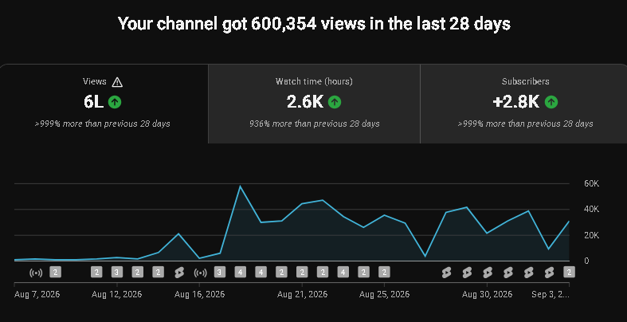
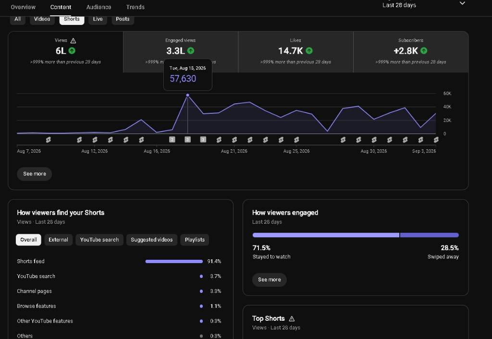
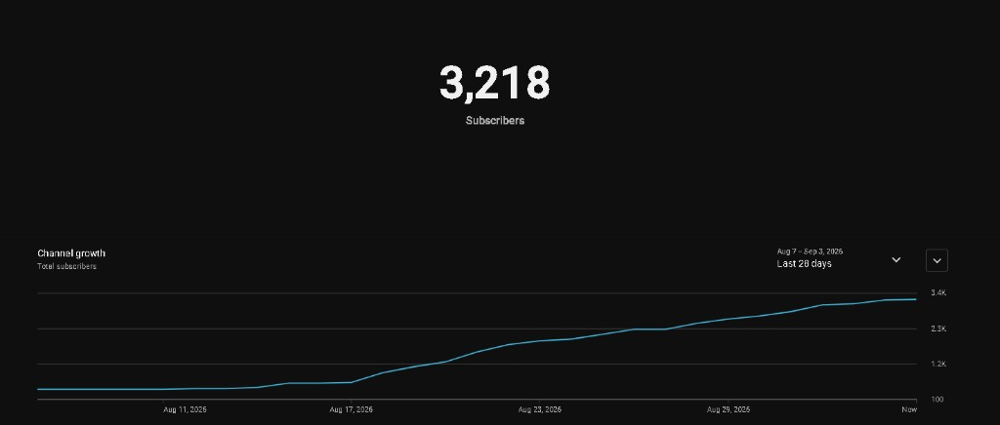

YouTube & more
Content creation
YouTube videos, shorts, and other work I make. I’ll add pieces here as I go.
channel stats for 4/9/26



YouTube & more
YouTube videos, shorts, and other work I make. I’ll add pieces here as I go.


